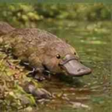

About Silly Platypus
A small business with a big appreciation for unusual wildlife and outdoor discovery.
Silly Platypus began with a curious creature
The platypus is an unusual animal with a bill, webbed feet, and a beaver-like tail. It spends much of its time in freshwater environments, which makes it a fitting inspiration for a business built around exploring creeks and ponds. Its mix of unexpected features reminds us that nature rarely fits into just one category.
Silly Platypus was imagined as a friendly neighborhood shop for curious people. We bring together simple exploration tools, approachable learning materials, and creative activities that help visitors feel more connected to the waterways around them.

Silly Platypus keeps discovery welcoming
You do not have to be an expert naturalist to enjoy exploring outside. Our products are designed for beginners, families, students, and lifelong learners who want a simple way to get started.
We believe the best discoveries often begin with a question. What made that ripple? Which bird left that feather? What kind of plant is growing beside the water? Silly Platypus is here to help turn those questions into an adventure.